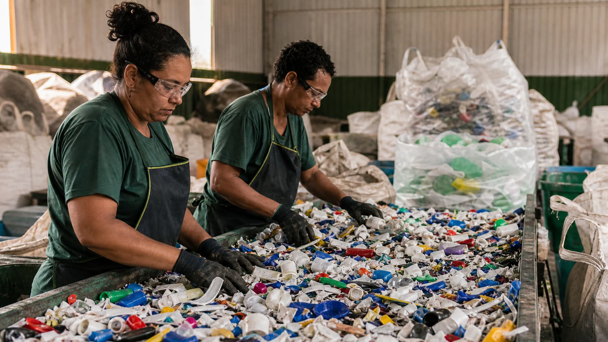
01 / Origem
O plástico deixa de ser descarte.
Cooperativas separam, organizam e valorizam o resíduo pós-consumo. É aqui que a circularidade começa: com pessoas, renda e matéria recuperada.
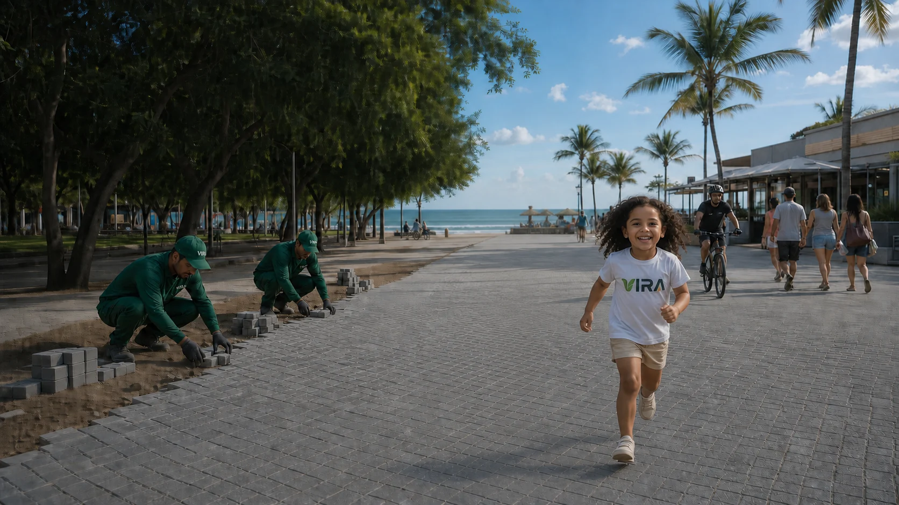
Transformamos polímeros pós-consumo em soluções de alto desempenho para arquitetura, infraestrutura e cidades.
Conheça nossos produtosConheça nossos produtos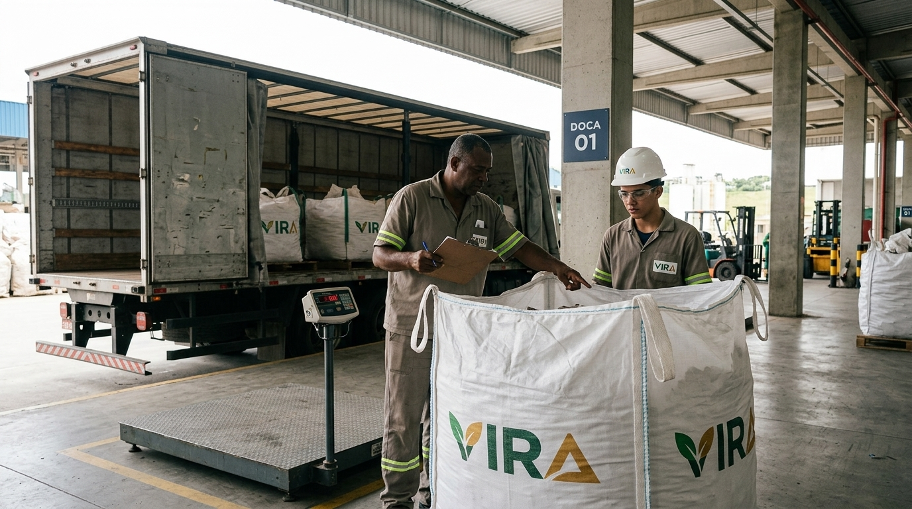
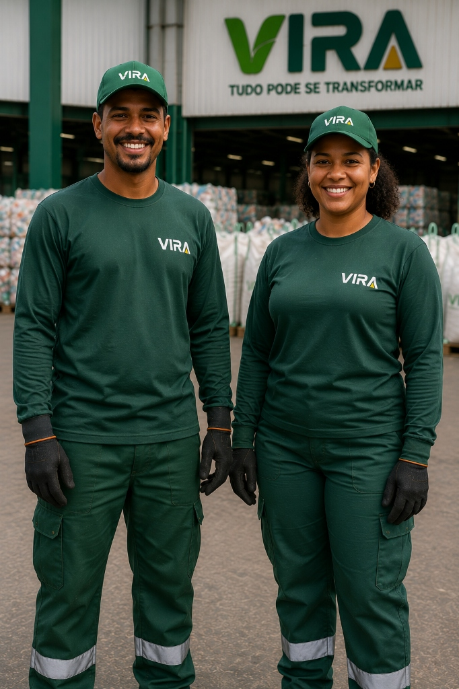
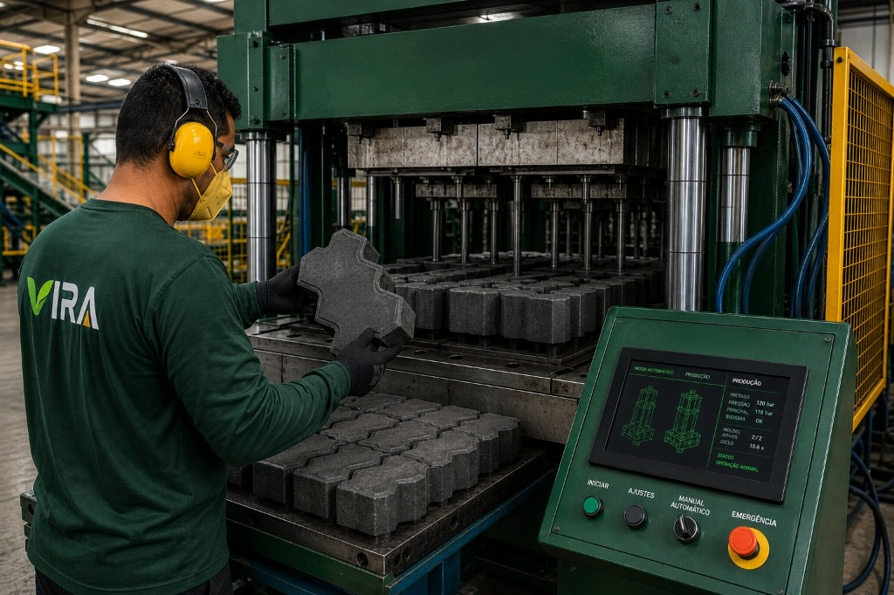
+1.200 t/mêsCapacidade industrial em Caruaru — PE
Sobre a VIRA
A VIRA é uma indústria de materiais circulares que transforma resíduos plásticos em componentes de alto desempenho. Unimos engenharia polimérica, produção industrial e rastreabilidade para criar materiais duráveis, especificáveis e capazes de permanecer em circulação.

Cooperativas separam, organizam e valorizam o resíduo pós-consumo. É aqui que a circularidade começa: com pessoas, renda e matéria recuperada.
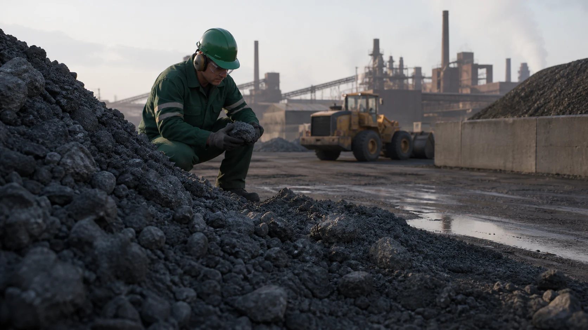
O coproduto mineral da siderurgia é selecionado, caracterizado e preparado para retornar à cadeia produtiva com controle técnico.
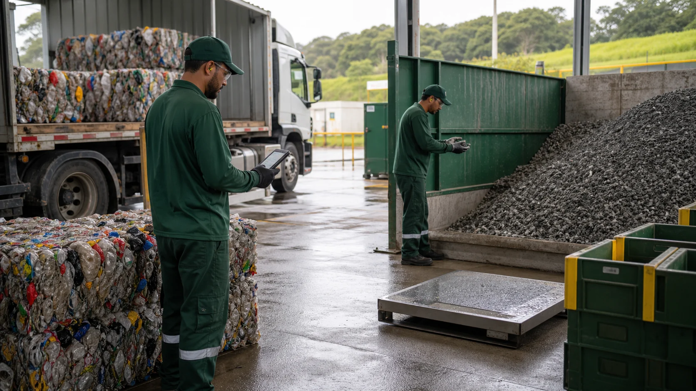
Na recepção, cada carga é pesada, documentada e identificada por lote. Origem e qualidade acompanham a matéria durante todo o processo.
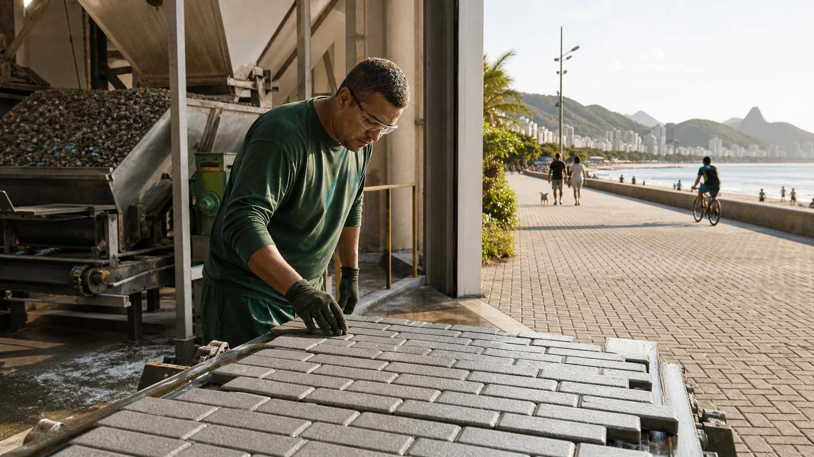
Preparação, formulação, calor e pressão transformam os materiais em pavers duráveis — prontos para construir espaços urbanos melhores.
Indicadores
Nossa escala industrial transforma resíduos em resultados concretos para empresas, cidades e pessoas.
Capacidade mensal
+1.200tMatriz energética
100%Petróleo virgem
0%Garantia
10 anosNossos produtos
Uma família de produtos para pavimentação e infraestrutura urbana, desenvolvida com controle industrial e matéria recuperada.
Para calçadas, praças, áreas públicas e projetos urbanos.
Delimitação, drenagem e organização de vias e passeios.
Soluções modulares para diferentes necessidades construtivas.
Expertise industrial
Engenharia térmica que converte polímeros pós-consumo em peças maciças, estáveis e resistentes.
Preparação e descontaminação da matéria-prima para atingir homogeneidade e pureza técnica.
Rastreabilidade por QR Code com origem, composição, lote e impacto ambiental de cada peça.
Calculadora de impacto
Uma estimativa inicial para apoiar decisões de projeto. A equipe técnica valida os resultados na especificação.
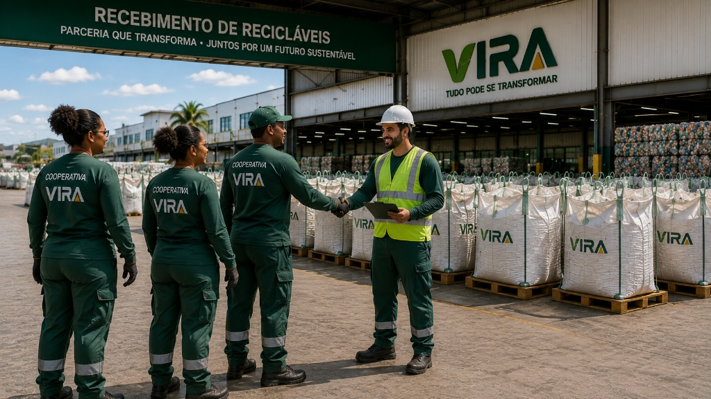
Impacto e cooperativas
Nossa matéria carrega histórias de coleta, renda e transformação. Ao conectar cooperativas, indústria e projeto, mantemos valor circulando no território.
Da fábrica ao projeto
Processo, pessoas e controle industrial formam a base de cada material VIRA.
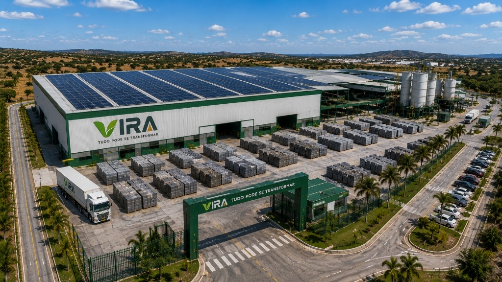
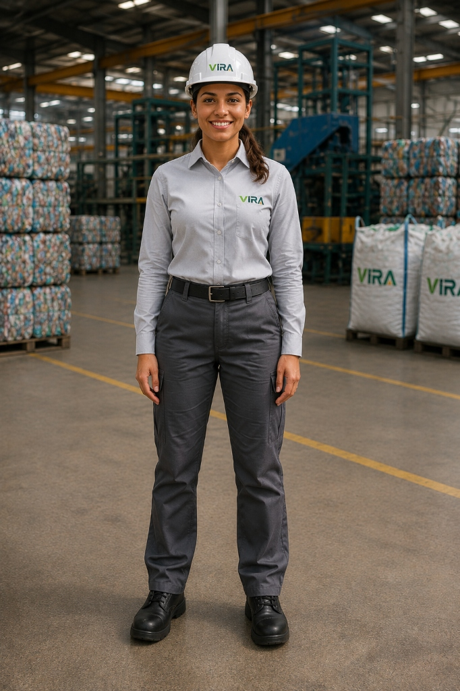
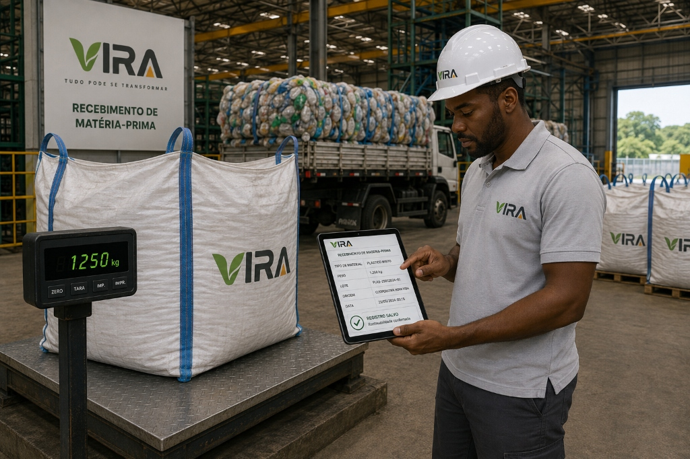
Perguntas frequentes
Pavimentação, fachadas, mobiliário, decks, pergolados, cercamentos e soluções desenvolvidas sob demanda.
Sim. A documentação aplicável, os resultados de ensaios e a rastreabilidade são apresentados durante a especificação.
Sim. Arquitetos, construtoras, incorporadoras e prefeituras podem solicitar amostras por meio do formulário.
Projetos especiais são avaliados conforme geometria, volume, aplicação e requisitos de desempenho.
O QR Code vincula a peça ao lote de produção e aos dados disponíveis sobre composição, origem e impacto.
Contato e especificação
Conte sobre a aplicação, a metragem e o estágio do projeto. Nossa equipe técnica retorna com caminhos de especificação.